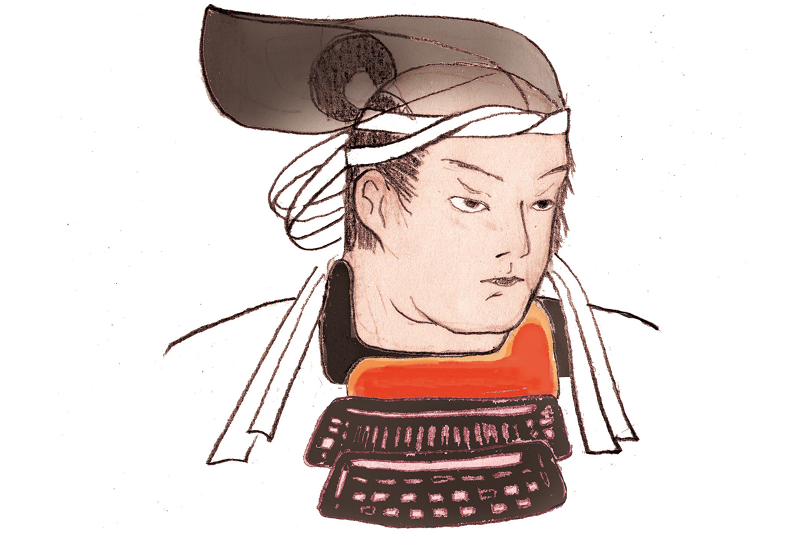
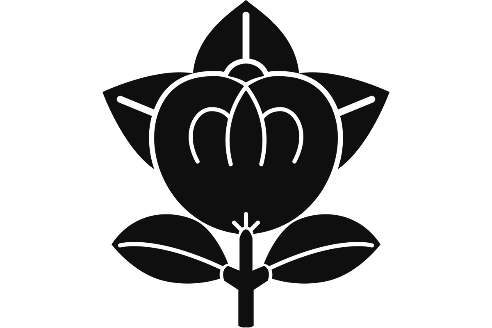

Префектура Симанэ · Ясуги · история
Сиканоскэ Яманака: самурай, который просил у луны семь бед и восемь мук

Сиканоскэ Яманака служил роду Амаго и не бросил его даже после разгрома. В Японии его помнят как образец верности и как человека, который сам просил себе испытаний.
Эпоха
Сэнгоку одной фразой
С конца XV до конца XVI века Япония жила в непрерывной войне: власть сёгунов Муромати рухнула, и страну делили между собой князья-даймё. Эту эпоху называют Сэнгоку, «эпохой воюющих провинций», и именно она дала Японии больше всего легендарных полководцев. Один из них родился около 1545 года в провинции Идзумо, на востоке нынешней префектуры Симанэ.
Герой
Юный гений Санъина
Санъином называют побережье Японского моря на западе острова Хонсю, и первым среди его воинов называют Сиканоскэ Яманаку. Он служил роду Амаго, правившему Идзумо, и получил прозвище «дитя кирина Санъина», то есть юный гений: кирин в японских преданиях это чудесный зверь, предвещающий великого человека. Ещё при жизни говорили, что в бою он превосходит Масасигэ Кусуноки (1294?–1336), полководца XIV века и главный в Японии символ преданности. Сиканоскэ узнавали по шлему с полумесяцем спереди и оленьими рогами по бокам, и, говорят, он был красив.
Всю жизнь он отдал господину. Когда в 1566 году замок Гассан-Тода пал под натиском Мотонари Мори (1497–1571), даймё, подчинившего почти весь запад Хонсю, и род Амаго на время исчез, Сиканоскэ продолжил бороться за его возрождение. В 1578 году, в войне Амаго с Тэрумото Мори, внуком Мотонари, за замок Коцуки, он попал в плен и был убит. Мастера кодан, японского искусства устных историй о героях, сделали верного вассала любимцем всей страны.
Девиз
«Пошли мне семь бед и восемь мук»
По преданию, моля о возрождении рода, он обратился к молодому месяцу: «Пошли мне семь бед и восемь мук». Смысл в том, что ради большого дела нужно самому идти навстречу трудностям. Талант к бою был у него от природы, но и упражнялся он каждый день.

Хроника
Жизнь в датах
- 1545: по преданию, родился в провинции Идзумо.
- 1556: поступил на службу к Ёсихисе Амаго, главе рода.
- 1560: взял замок Такао в соседней провинции Хоки.
- 1565: Мотонари Мори осадил Гассан-Тоду, резиденцию Амаго, Сиканоскэ отбил его полководца Мотохару Киккаву.
- 1566: род Амаго пал.
- 1568: вернул из монахов в мир юного Кацухису Амаго и поставил его во главе борьбы за возрождение рода.
- 1569: напал на Гассан-Тоду.
- 1572: по преданию, встретился с Нобунагой Одой (1534–1582), первым из объединителей Японии, и поклялся идти в авангарде его похода на запад.
- 1578: погиб у переправы Аи в провинции Биттю.
Где увидеть
Ясуги: замок рода Амаго
Развалины замка Гассан-Тода
Замок Амаго стоял на горе Гассан в районе Хиросэ города Ясуги. Построек не осталось, но сохранились каменные террасы, где жил владелец. К вершине ведёт тропа с крутыми участками.
Развалины замка Гассан-Тода
- Адрес
- префектура Симанэ, Ясуги, Хиросэ, Тода
Памятник в парке Тайкодан
У подножия горы Гассан лежит парк Тайкодан, и в нём стоит памятник Сиканоскэ Яманаке. Весной здесь цветут сакуры, а от парка можно подняться к развалинам замка.
Парк Тайкодан
- Адрес
- префектура Симанэ, Ясуги, Хиросэ, Тода
Исторический музей Ясуги
Городской музей у подножия горы рассказывает историю замка: здесь есть его макет и вещи родов Амаго, Мори и Киккава.
Исторический музей Ясуги
- Адрес
- префектура Симанэ, Ясуги, Хиросэ, Тётё, 752